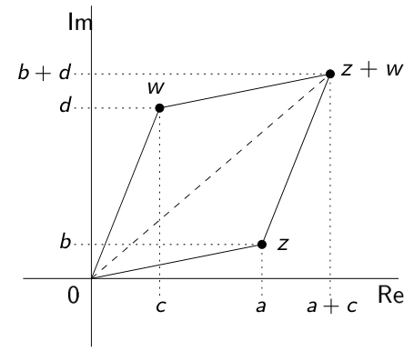

6.1. Complex Numbers#
Complex numbers have two components real part and the imaginary part. A complex number is usually expressed as \(z = a+b\,i\), where \(a\) and \(b\) are real numbers, and \(i\) is a symbol for indicating the imaginary part (\(i^2=-1\)). The real part of the complex number \(z = a+b\,i\) is the real number \(a\), and the imaginary part is the real number \(b\).
A Complex number can be expressed by the ordered pair. This representation can be convenient in plotting this number in the Argand plane. However, here the horizontal axis is called the real axis, and the vertical axis is called the imaginary axis.
The field of real numbers denoted as \(\mathbb{R}\), and the field of complex numbers denoted \(\mathbb{C}\).
6.1.1. Addition and Subtraction of Complex Numbers#
Complex numbers \(z_1=a+bi\) and \(z_2=c+di\), are equal only if their real parts are equal, and their imaginary parts are equal. That is
Now, for two complex numbers \(z_1=a+bi\) and \(z_2=c+di\), we have
Addition: \(z_1+z_2=\left(a+b\,i\right)+\left(c+d\,i\right)=\left(a+c\right)+\left(b+d\right)\,i,\)
Subtraction: \(z_1-z_2=\left(a+b\,i\right)-\left(c+d\,i\right)=\left(a-c\right)+\left(b-d\right)\,i.\)
Example:
\((-3+6i) + (5-i) = 2+5i\).
\((4-7i) + (6-2i) = 10-9i\).
\((-3+6i) - (5-i) = -8+7i\).
\((4-7i) - (6-2i) = -2-5i\).
For three given complex numbers \(z\), \(w\), and \(v\), we have
\(z + w = w + z\). (addition is commutative)
\((z + w) + v = z + (w + v)\). (addition is associative)
\(z + 0 =0+z= z\). (existence of an additive identity)
For every \(z=a+bi\) there exists a complex number \(-z = -a -bi\) such that \(z + (-z) =(-z)+z=0.\) (existence of an additive inverse)
If \(z=a+bi\) and \(w=c+di\), then \(z+w=(a+c)+(b+d)i\).
Geometrically, we have:
{kind=link}
We can see that \(0\), \(z\), \(w\), and \(z+w\) are the vertices of a parallelogram.
6.1.2. Multiplication of Complex Numbers#
Let \(z_1=a+b\,i\) and \(z_2=c+d\,i\) be two complex numbers. The product of these complex numbers:
Since \(i^2=-1\), this becomes
Example: Multiplication of Complex Numbers
Similarly,
Let \(z, w\) and \(v\) be complex numbers.
\(zw=wz\).
\((zw)v=z(wv)\).
\(z (w+v) = zw + zv\).
\(1z=z\).
For each \(z \neq 0\), there exists \(z^{-1}\) such that
\(z z^{-1} =z^{-1}z= 1\).
Example: Find all complex numbers \(z=a+bi\) with \(b\neq 0\) such that \(z^2=-3+4i\).
Solution: We have
Hence,
Since \(2ab=4\), \(a=\frac{2}{b}\).
Substituting this into the first equation gives us
Now, \(b^4-3b^2-4=0\) can be factored into
Since \(b\in \mathbb{R}\) and \(b^2+1\) has no real roots, \(b=2\) or \(b=-2\).
Since \(a=\frac{2}{b}\), it follows that
when \(b=2\), \(a=1\), and \(z=a+bi=1+2i\);
when \(b=-2\), \(a=-1\), and \(z=a+bi=-1-2i\).
Therefore, if \(z^2=-3+4i\), then \(z=1+2i\) or \(z=-1-2i\).
6.1.3. The Conjugate of a Complex Number#
The complex conjugate of complex number \(z = a+b\,i\) is defined as \(\overline{z} = a-b\,i\).
Example: Conjugate of a Complex Number
The geometric interpretation of the complex conjugate:
Some of the properties of the complex conjugate are listed in the following theorem.
For two complex numbers, \(z\) and \(w\), the following properties of the conjugate hold.
\(\overline{z\pm w}=\overline{z}\pm \overline{w}\),
\(\overline{zw} = \overline{z}\, \overline{w}\),
\(\overline{\left(\overline{z}\right)} = z\),
\(\overline{\left(\dfrac{z}{w}\right)}=\dfrac{\overline{z}}{\overline{w}}\),
\(z\) is real if and only if \(\overline{z} = z\).
For a complex number \(z=a+b\,i\), we have
The quotient \(z=a+b\,i\) divided by \(w=c+d\,i\), where \(c^2+d^2\neq0\), is
Example:
For a complex number \(z=a+b\,i\), the multiplicative inverse of \(z\), expressed as \(z^{-1}\), exists if and only if \(a^2 +b^2 \neq 0\), and it is given by
Example: When \(z = 2 + 6i\), \(z^{-1}\) is defined, and
Note that we can always check that \(zz^{-1}=1\).
6.1.4. The Absolute Value (Modulus) of a Complex Number#
The distance of a complex number \(z=a+b\,i\) from the origin is called the modulus or absolute value, and it is defined as follows.
\(z\overline{z}=\left(a+b\,i\right)\left(a-b\,i\right)=a^2+ab\,i-ab\,i-b\,i^2=a^2+b^2=|z|^2\).
\(\dfrac{1}{z}= \dfrac{\overline{z}}{|z|^2}\).
\(|z|\geq 0\) for all \(z\).
\(|z|=0\) if and only if \(z=0\).
\(\dfrac{z}{w}=\dfrac{z}{w}\dfrac{\overline{w}}{\overline{w}}=\dfrac{z\overline{w}}{|w|^2}.\)
Example:
\(|-3+4i|=\sqrt{3^2+4^2}= \sqrt{25}= 5\).
\(|3-2i|= \sqrt{3^2+2^2}=\sqrt{13}\).
\(|i|= \sqrt{1^2}=1\).
For complex numbers \(z=a+b\,i\) and \(w=c+d\,i\),
\(|zw|=|z||w|.\)
also if \(c^2+d^2\neq0\), \(\left|\dfrac{z}{w}\right|=\dfrac{|z|}{|w|}.\)
for \(c\in \mathbb{R}\), \(|cz|=|c||z|.\)
For two complex numbers \(z\) and \(w\), the following two inequalities hold:
The first one is called the Triangle Inequality.
Example: Let \(z=4-3i\), \(w=1+i\), and \(u=2-2i\). Then, \(\left|\dfrac{w-\overline{wu}}{zu}\right|\) equals
a) \(\dfrac{1}{10\sqrt{2}}\)
b) \(\dfrac{1}{2\sqrt{5}}\)
c) \(\dfrac{1}{5}\)
d) \(\dfrac{9}{10\sqrt{2}}\)
e) \(\dfrac{1}{\sqrt{2}}\)
Solution: We are going to use the following fact,
\[\left| c(a+bi)\right|=|c||a+bi|=|c|\sqrt{a^2+b^2}.\]
Therefore,
Refrences
Kuttler, Kenneth. “A First Course in Linear Algebra (Lyryx).” (2018).
Nicholson, W. Keith. “Linear Algebra with Applications (Lyryx).” (2018).
Stewart, James, Daniel K. Clegg, and Saleem Watson. Calculus: early transcendentals. Cengage Learning, 2020.